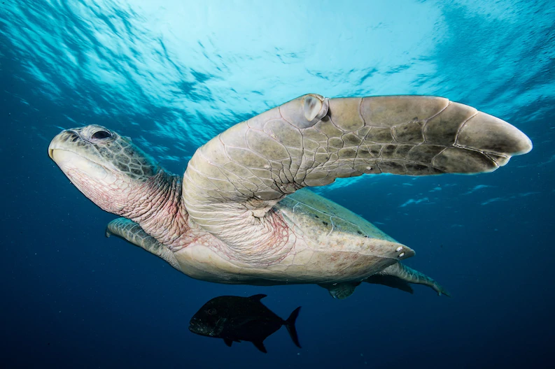

SEA TURTLES 101
Nature is slow, but sure; she works no faster than need be; she is the tortoise that wins the race by her perseverance.

Find out about sea turtles' oldest known ancestor, how certain adaptations may have helped the reptiles survive, and the conservation efforts being made to save them.
Facts
Six of the seven species of sea turtles that swim the planet’s waters—leatherback, loggerhead, Kemp’s ridley, green, olive ridley, and hawksbill—are found in every ocean except the Arctic and Antarctic. The seventh, the flatback, lives only in the waters around Australia. The leatherback is the largest sea turtle and can weigh a whopping 2,000 pounds. It’s also the only sea turtle that doesn’t have a hard, bony shell. Its carapace is somewhat flexible and almost rubbery to the touch. The shells of other sea turtles are made of thick plates called scutes.
Turtle journeys
Sea turtles make incredibly long migrations between feeding and breeding areas. The leatherback travels an average of 3,700 miles each way. Sea turtles mate at sea, then come ashore on beaches to lay their eggs. Females dig a hole in the sand, then deposit their clutch of eggs (up to 100, in the leatherback’s case), cover it back up, then return to the sea.
After about 60 days, the eggs hatch and tiny hatchlings make their way from the nest to the water at night, often a deadly ordeal as seabirds, crabs, and other predators prey on the young turtles. Another threat comes from coastal development. Natural light at the horizon guides the hatchings to the ocean. Lights from hotels, homes, and other buildings can confuse the turtles into heading the wrong way.
Extreme threats
Six of the seven sea turtle species are classified as threatened, endangered, or critically endangered, due largely to human impact in the form of hunting, bycatch in fishing nets, pollution, and climate change. Climate change affects the turtles by warming the temperature of the sand that sea turtle eggs are laid in, which in turn affects the outcome of the hatchlings’ sex.